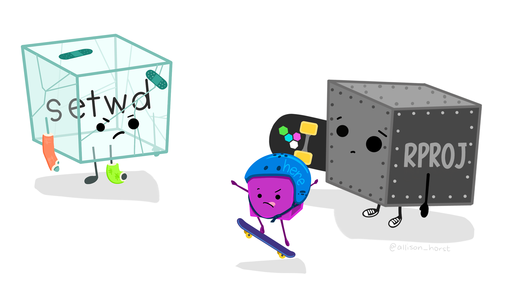
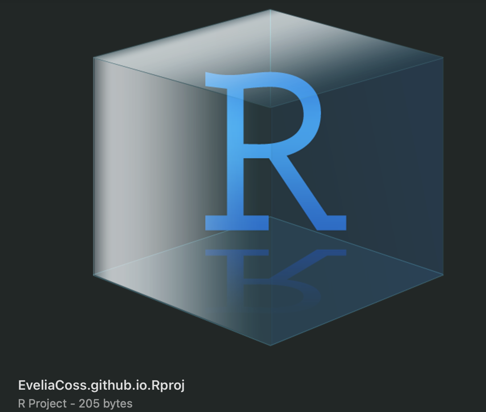
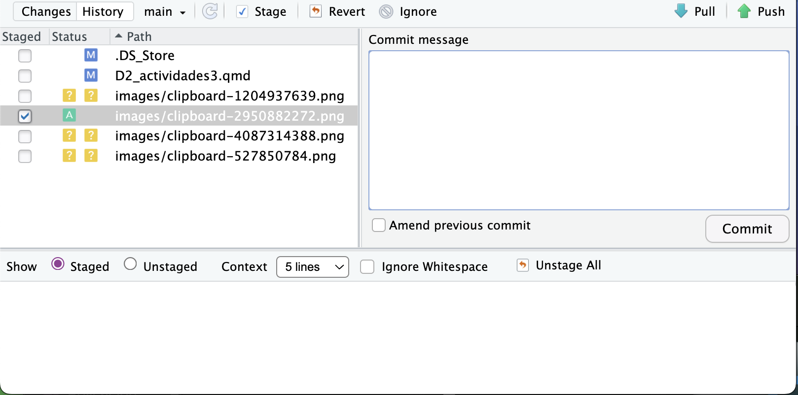
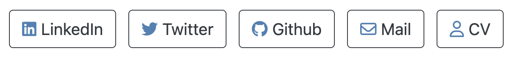

Code
install.packages("postcards")
install.packages("fontawesome")Fecha: 19 de febrero, 2026

Imagen tomada de: Allison Horst
Carpeta de trabajo dedicada: al crear un RProject, RStudio genera automáticamente una carpeta que contiene todos los archivos y configuraciones necesarias para tu proyecto.
Organización: te permite mantener en un solo lugar tus scripts, datos, variables y documentos relacionados.
Reproducibilidad: facilita que cualquier persona (incluido tú en el futuro) pueda abrir el proyecto y trabajar con el mismo entorno.
Integración con Git/GitHub: al tener el mismo nombre que tu repositorio, se asegura una sincronización más clara y ordenada entre tu proyecto local y el repositorio remoto.

Imagen tomada de: Allison Horst

Imagen tomada de: Allison Horst

git initusuario/nombre-repo con tu repositorio real.git remote add origin https://github.com/usuario/nombre-repo.gitEl link puedes obtenerlo dando clic en el código verde que dice CODE > HTTPS > copiar.

git add .
git commit -m "Primer commit"
git push -u origin mainCuando vinculas tu proyecto de R (.Rproj) con GitHub y habilitas Git, aparece una nueva pestaña llamada Git en la parte superior derecha de RStudio. Desde ahí puedes manejar tus cambios sin necesidad de usar la terminal.

Detectar cambios

Seleccionar archivos para el commit
git add en la terminal.Escribir el mensaje de commit
Hacer el commit

Sincronizar con GitHub
Usa los botones Push (subir cambios al repositorio remoto) y Pull (traer cambios del remoto).
Normalmente, después de un commit local, harás Push para que tus cambios aparezcan en GitHub.
Instalar los paquetes:
install.packages("postcards")
install.packages("fontawesome")Vamos a modificar paso a paso el YAML encontrado este archivo index.Rmd.
---
title: "Evelia Coss" # <- Cambia por tu nombre
image: "yo_azul.jpg" # <- Coloca tu foto, recuerda checar la extensión del archivoEsta siguiente parte configura los botones que aparecen en tu página web, los que ves aquí:

Los botones se componen de 3 cosas:
url: la dirección web que apunta a la red social o página deseada.label(etiqueta): el texto visible del botón, que puede incluir tanto el nombre como el ícono.fontawesome.De esta forma, el botón combina funcionalidad (el enlace), legibilidad (la etiqueta) y diseño visual (el ícono), ofreciendo una experiencia más atractiva y clara para el usuario.
url agregando tu información:links:
- label: '`<svg aria-hidden="true" role="img" viewBox="0 0 448 512" style="height:1em;width:0.88em;vertical-align:-0.125em;margin-left:auto;margin-right:auto;font-size:inherit;fill:steelblue;overflow:visible;position:relative;"><path d="M416 32H31.9C14.3 32 0 46.5 0 64.3v383.4C0 465.5 14.3 480 31.9 480H416c17.6 0 32-14.5 32-32.3V64.3c0-17.8-14.4-32.3-32-32.3zM135.4 416H69V202.2h66.5V416zm-33.2-243c-21.3 0-38.5-17.3-38.5-38.5S80.9 96 102.2 96c21.2 0 38.5 17.3 38.5 38.5 0 21.3-17.2 38.5-38.5 38.5zm282.1 243h-66.4V312c0-24.8-.5-56.7-34.5-56.7-34.6 0-39.9 27-39.9 54.9V416h-66.4V202.2h63.7v29.2h.9c8.9-16.8 30.6-34.5 62.9-34.5 67.2 0 79.7 44.3 79.7 101.9V416z"/></svg>`{=html} LinkedIn'
url: "https://www.linkedin.com/in/evelia-lorena-coss-navarrete-562226229/"
- label: '`<svg aria-hidden="true" role="img" viewBox="0 0 512 512" style="height:1em;width:1em;vertical-align:-0.125em;margin-left:auto;margin-right:auto;font-size:inherit;fill:steelblue;overflow:visible;position:relative;"><path d="M459.37 151.716c.325 4.548.325 9.097.325 13.645 0 138.72-105.583 298.558-298.558 298.558-59.452 0-114.68-17.219-161.137-47.106 8.447.974 16.568 1.299 25.34 1.299 49.055 0 94.213-16.568 130.274-44.832-46.132-.975-84.792-31.188-98.112-72.772 6.498.974 12.995 1.624 19.818 1.624 9.421 0 18.843-1.3 27.614-3.573-48.081-9.747-84.143-51.98-84.143-102.985v-1.299c13.969 7.797 30.214 12.67 47.431 13.319-28.264-18.843-46.781-51.005-46.781-87.391 0-19.492 5.197-37.36 14.294-52.954 51.655 63.675 129.3 105.258 216.365 109.807-1.624-7.797-2.599-15.918-2.599-24.04 0-57.828 46.782-104.934 104.934-104.934 30.213 0 57.502 12.67 76.67 33.137 23.715-4.548 46.456-13.32 66.599-25.34-7.798 24.366-24.366 44.833-46.132 57.827 21.117-2.273 41.584-8.122 60.426-16.243-14.292 20.791-32.161 39.308-52.628 54.253z"/></svg>`{=html} Twitter'
url: "https://twitter.com/EveliaCoss/"
- label: '`<svg aria-hidden="true" role="img" viewBox="0 0 496 512" style="height:1em;width:0.97em;vertical-align:-0.125em;margin-left:auto;margin-right:auto;font-size:inherit;fill:steelblue;overflow:visible;position:relative;"><path d="M165.9 397.4c0 2-2.3 3.6-5.2 3.6-3.3.3-5.6-1.3-5.6-3.6 0-2 2.3-3.6 5.2-3.6 3-.3 5.6 1.3 5.6 3.6zm-31.1-4.5c-.7 2 1.3 4.3 4.3 4.9 2.6 1 5.6 0 6.2-2s-1.3-4.3-4.3-5.2c-2.6-.7-5.5.3-6.2 2.3zm44.2-1.7c-2.9.7-4.9 2.6-4.6 4.9.3 2 2.9 3.3 5.9 2.6 2.9-.7 4.9-2.6 4.6-4.6-.3-1.9-3-3.2-5.9-2.9zM244.8 8C106.1 8 0 113.3 0 252c0 110.9 69.8 205.8 169.5 239.2 12.8 2.3 17.3-5.6 17.3-12.1 0-6.2-.3-40.4-.3-61.4 0 0-70 15-84.7-29.8 0 0-11.4-29.1-27.8-36.6 0 0-22.9-15.7 1.6-15.4 0 0 24.9 2 38.6 25.8 21.9 38.6 58.6 27.5 72.9 20.9 2.3-16 8.8-27.1 16-33.7-55.9-6.2-112.3-14.3-112.3-110.5 0-27.5 7.6-41.3 23.6-58.9-2.6-6.5-11.1-33.3 2.6-67.9 20.9-6.5 69 27 69 27 20-5.6 41.5-8.5 62.8-8.5s42.8 2.9 62.8 8.5c0 0 48.1-33.6 69-27 13.7 34.7 5.2 61.4 2.6 67.9 16 17.7 25.8 31.5 25.8 58.9 0 96.5-58.9 104.2-114.8 110.5 9.2 7.9 17 22.9 17 46.4 0 33.7-.3 75.4-.3 83.6 0 6.5 4.6 14.4 17.3 12.1C428.2 457.8 496 362.9 496 252 496 113.3 383.5 8 244.8 8zM97.2 352.9c-1.3 1-1 3.3.7 5.2 1.6 1.6 3.9 2.3 5.2 1 1.3-1 1-3.3-.7-5.2-1.6-1.6-3.9-2.3-5.2-1zm-10.8-8.1c-.7 1.3.3 2.9 2.3 3.9 1.6 1 3.6.7 4.3-.7.7-1.3-.3-2.9-2.3-3.9-2-.6-3.6-.3-4.3.7zm32.4 35.6c-1.6 1.3-1 4.3 1.3 6.2 2.3 2.3 5.2 2.6 6.5 1 1.3-1.3.7-4.3-1.3-6.2-2.2-2.3-5.2-2.6-6.5-1zm-11.4-14.7c-1.6 1-1.6 3.6 0 5.9 1.6 2.3 4.3 3.3 5.6 2.3 1.6-1.3 1.6-3.9 0-6.2-1.4-2.3-4-3.3-5.6-2z"/></svg>`{=html} Github'
url: "https://github.com/EveliaCoss/"
- label: '`<svg aria-hidden="true" role="img" viewBox="0 0 512 512" style="height:1em;width:1em;vertical-align:-0.125em;margin-left:auto;margin-right:auto;font-size:inherit;fill:steelblue;overflow:visible;position:relative;"><path d="M64 112c-8.8 0-16 7.2-16 16v22.1L220.5 291.7c20.7 17 50.4 17 71.1 0L464 150.1V128c0-8.8-7.2-16-16-16H64zM48 212.2V384c0 8.8 7.2 16 16 16H448c8.8 0 16-7.2 16-16V212.2L322 328.8c-38.4 31.5-93.7 31.5-132 0L48 212.2zM0 128C0 92.7 28.7 64 64 64H448c35.3 0 64 28.7 64 64V384c0 35.3-28.7 64-64 64H64c-35.3 0-64-28.7-64-64V128z"/></svg>`{=html} Mail'
url: "mailto:ecoss@liigh.unam.mx"
- label: '`<svg aria-hidden="true" role="img" viewBox="0 0 448 512" style="height:1em;width:0.88em;vertical-align:-0.125em;margin-left:auto;margin-right:auto;font-size:inherit;fill:steelblue;overflow:visible;position:relative;"><path d="M304 128a80 80 0 1 0 -160 0 80 80 0 1 0 160 0zM96 128a128 128 0 1 1 256 0A128 128 0 1 1 96 128zM49.3 464H398.7c-8.9-63.3-63.3-112-129-112H178.3c-65.7 0-120.1 48.7-129 112zM0 482.3C0 383.8 79.8 304 178.3 304h91.4C368.2 304 448 383.8 448 482.3c0 16.4-13.3 29.7-29.7 29.7H29.7C13.3 512 0 498.7 0 482.3z"/></svg>`{=html} CV'
url: "https://eveliacoss.github.io/CV/cv_ECoss.html"Si quieres buscar otro ícono puedes buscarlo directamente en la página web Font Awesome. Solo si aparece podriamos agregarlo.
Cambia el nombre de jolla por otro.
output:
postcards::jolla
--- El estilo onofre tiene problemas para renderizarse bien.

Imagen tomada de: Allison Horst